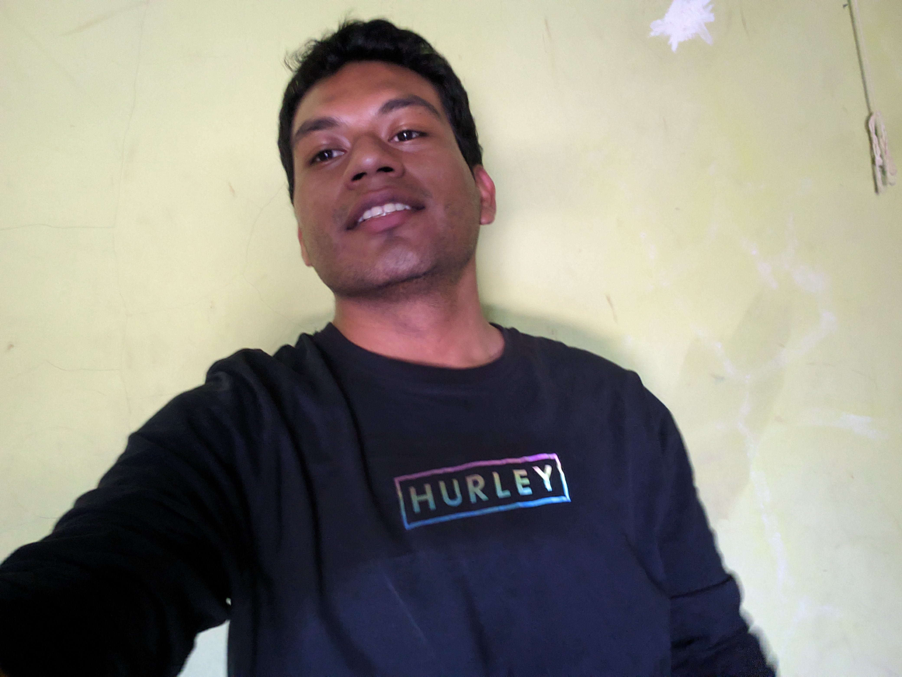

<!DOCTYPE html>
<html lang="en">
  <head>
    <meta charset="UTF-8" />
    <title>CodePen - Material Design: Profile Card</title>
    <link
      rel="stylesheet"
      href="https://fonts.googleapis.com/css?family=Roboto"
    />
    <link
      rel="stylesheet"
      href="https://maxcdn.bootstrapcdn.com/font-awesome/4.5.0/css/font-awesome.min.css"
    />
    <link rel="stylesheet" href="./css/card.css" />
  </head>

  <body>
    <!-- partial:index.partial.html -->
    <aside class="profile-card">
      <header>
        <!-- here’s the avatar -->
        <a target="_blank" href="./index.html">
          
        </a>

        <!-- the username -->
        <h1>Fernando Musto</h1>

        <!-- and role or location -->
        <h2>Carnet: 2021MR-602</h2>
      </header>

      <!-- bit of a bio; who are you? -->
      <div class="profile-bio">
        <p>
          El diseño de paginas web como su estrutura y procesos interno es un
          mundo con muchas puertas al futuro.
        </p>
      </div>

      <!-- some social links to show off -->
      <ul class="profile-social-links">
        <li>
          <a target="_blank" href="#">
            <i class="fa fa-facebook"></i>
          </a>
        </li>
        <li>
          <a target="_blank" href="#">
            <i class="fa fa-twitter"></i>
          </a>
        </li>
        <li>
          <a
            target="_blank"
            href="https://github.com/F7MH2R/PortafolioWebActivaP1"
          >
            <i class="fa fa-github"></i>
          </a>
        </li>
        <li>
          <a target="_blank" href="#">
            <i class="fa fa-behance"></i>
          </a>
        </li>
      </ul>
    </aside>
    <!-- partial -->
  </body>
</html>
